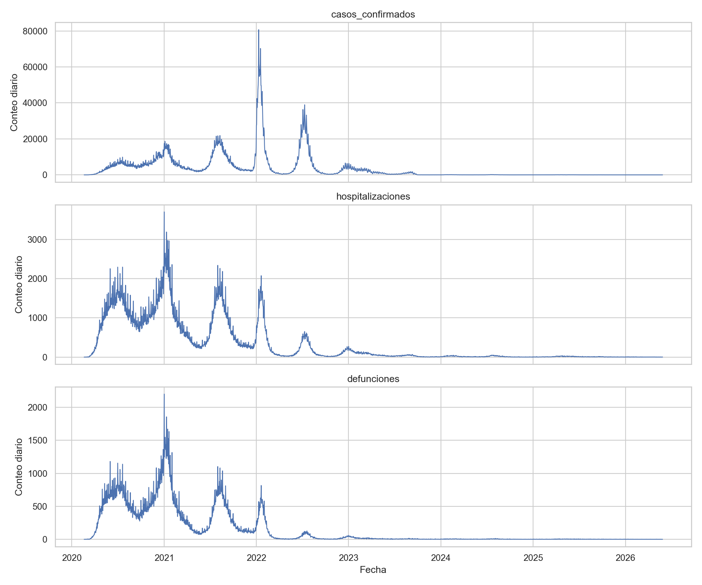
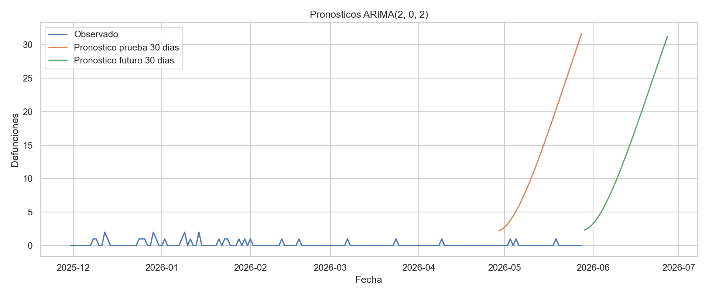
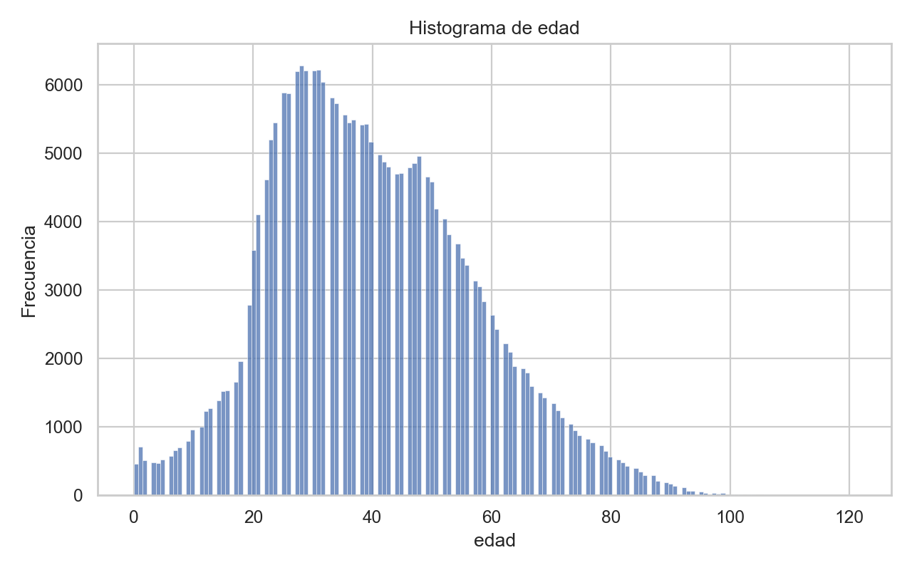
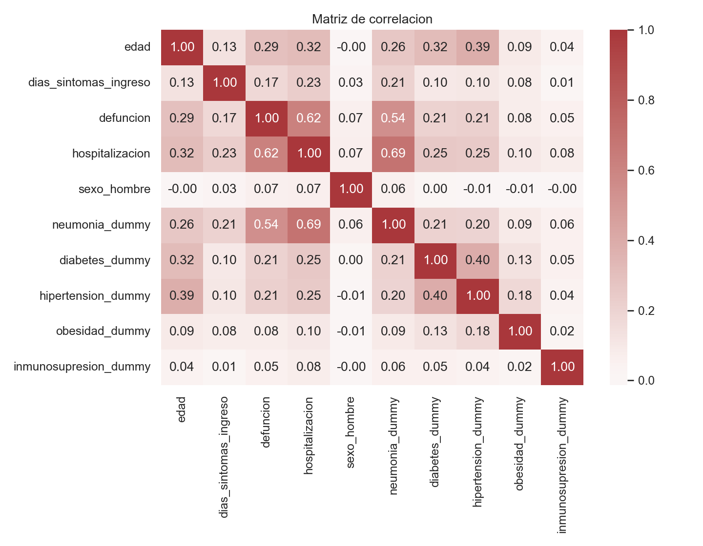
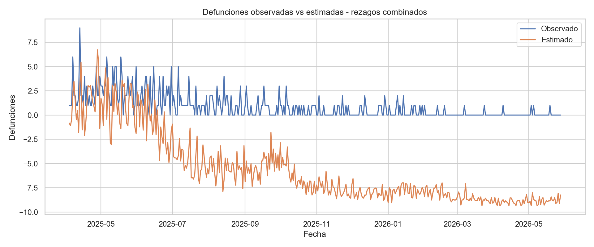
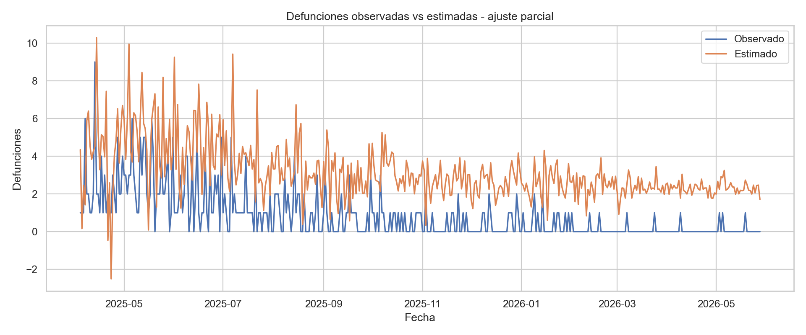

Casos analizados
7,735,170 2020-02-19 a 2026-05-28Series temporales y pronostico
Casos, hospitalizaciones y defunciones

Pronostico ARIMA

Exploracion descriptiva
Distribucion de edad

Matriz de correlacion

Modelos dinamicos
Rezagos combinados

Ajuste parcial

Metricas de rezagos
| modelo | nobs | r2 | r2_ajustado | aic | bic | rmse | mae |
|---|---|---|---|---|---|---|---|
| Rezagos casos | 2277.0 | 0.277409 | 0.276455 | 31326.153796 | 31349.076253 | 234.657363 | 150.943152 |
| Rezagos hospitalizaciones | 2277.0 | 0.918596 | 0.918488 | 26354.510864 | 26377.433320 | 78.760956 | 38.250569 |
| Rezagos combinados | 2277.0 | 0.932445 | 0.932267 | 25935.875769 | 25975.990067 | 71.748932 | 31.414067 |
Comorbilidades principales
| variable | casos_1 | observaciones_validas | prevalencia |
|---|---|---|---|
| hipertension_dummy | 922553 | 7712691 | 11.96% |
| obesidad_dummy | 741454 | 7713878 | 9.61% |
| diabetes_dummy | 677105 | 7711682 | 8.78% |
| neumonia_dummy | 535526 | 7705445 | 6.95% |
| tabaquismo_dummy | 417604 | 7712233 | 5.41% |
| asma_dummy | 147008 | 7712882 | 1.91% |
| epoc_dummy | 53286 | 7712662 | 0.69% |
| inmunosupresion_dummy | 45223 | 7712655 | 0.59% |
Contraste de hipotesis
| hipotesis | evidencia | evaluacion |
|---|---|---|
| H1 | 2 de 3 rezagos de casos tienen signo positivo R2 rezagos casos=0.2774. |
Apoyo parcial |
| H2 | R2 rezagos hospitalizaciones=0.9186 vs R2 rezagos casos=0.2774. | Apoya H2 |
| H3 | Durbin-Watson OLS multiple=0.2735 coeficiente defunciones_t-1=0.9952. |
Apoya H3 |
| H4 | ARIMA(2, 0, 2) genera pronosticos con RMSE 7 dias=3.2166 y RMSE 30 dias=17.3820. | Apoyo inicial |
Errores de pronostico ARIMA
| horizonte | rmse | mae | mape |
|---|---|---|---|
| 7.0 | 3.216583 | 3.120536 | 343.942737 |
| 14.0 | 6.776938 | 5.962285 | 343.942737 |
| 30.0 | 17.381990 | 14.621597 | 872.840770 |